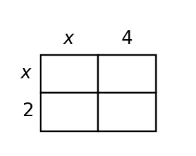
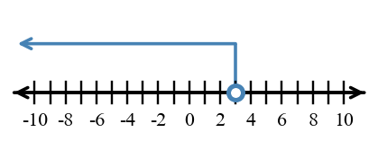
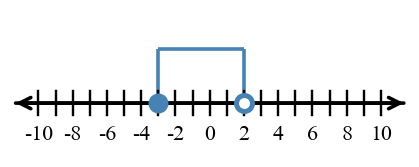

0A-S1-DOK1.01
Evaluate each absolute value expression.
- $\left|54\right|$
- $-\left|-7\frac{3}{5}\right|$
- $\left|3\right|-\left|-1\right|$
- $\left|2.2-5.13\right|$
Foundational algebra bank aligned to Unit 0A assessment plan. Items are grouped by section and DOK level.
Learning Target: Students will accurately perform operations with integers, fractions, and decimals while interpreting results in mathematical and contextual situations.
Evaluate each absolute value expression.
Simplify each expression.
Perform each rational-number operation, using fraction rules as needed.
Compute each value.
Evaluate each expression with decimals.
Determine whether each result is positive, negative, or zero before calculating. Then calculate.
Use the number line to plot $-\frac{3}{2}$ and $2.25$. Then state which number is greater.

Write each mixed number as an improper fraction and each improper fraction as a mixed number.
Order the numbers from least to greatest.
$-1.4,\quad -\frac{7}{5},\quad -1\frac{1}{3},\quad -1.08$
Complete each sign statement without calculating the exact value.
Simplify each quotient.
Compute.
Use absolute value to find the distance between each pair of numbers.
Find the missing rational number in each equation.
A science tank starts at $-6.5$ degrees Celsius. It warms by $2.75$ degrees, cools by $4.1$ degrees, and then warms by $1.6$ degrees. Write one expression and find the final temperature.
A recipe makes $3$ dozen muffins and uses $16$ ounces of oats. A club needs $8$ dozen muffins. At the same rate, how many ounces of oats are needed? Round to the nearest ounce and explain the operation you used.
Two workers can assemble $40$ kits in $3$ days. At the same rate, how many workers are needed to assemble $60$ kits in $1$ day? Show how the rational-number rate is used.
A diver begins at $1.5$ meters above sea level, descends $6.75$ meters, rises $2\frac{1}{4}$ meters, then descends another $1.1$ meters. Find the diver's final elevation and describe its meaning.
A student says $-2\frac{1}{3}+5\frac{1}{6}=3\frac{2}{3}$. Recompute the sum and identify the step where the likely error occurred.
Start at $-2.5$ on the number line. Move right $3.75$ units and then left $1.25$ units. Mark the pathway and state the final location.
Complete the diamond problem. The top is the product and the bottom is the sum. Explain which operation you used first.

Three students each compute $-\frac{5}{6}-\left(-\frac{1}{4}\right)$. One uses common denominators, one uses decimals, and one uses a number line. Choose one valid method and show enough work to verify the result.
A team earns $3\frac{1}{2}$ points for a successful trial and loses $1\frac{3}{4}$ points for an unsuccessful trial. The team has $4$ successful trials and $6$ unsuccessful trials. Find the net point change.
Evaluate $\left(-\frac{3}{5}+1.4\right)\div\left(-0.2\right)$. Show the order of operations and include at least one check for sign reasonableness.
A student claims $-\frac{3}{4}+\left(-\frac{2}{3}\right)=-\frac{5}{7}$ because the numerators and denominators can be added. Critique the reasoning and give a corrected sum.
Without completing exact multiplication first, estimate the value of $7.8(-0.52)$. Explain why the exact answer should be between $-5$ and $-3$ or why that interval is not reasonable.
Find the total change $-1\frac{1}{2}+\frac{3}{4}-2.25$ using two methods: fraction form and decimal form. Explain how the methods confirm each other.
Construct a step-by-step strategy for evaluating $\left|-4.5+\frac{7}{3}\right|-\left(-\frac{5}{6}\right)$. Your strategy must explain when to use absolute value and when to combine rational numbers.
Create a three-entry temperature-change log whose net change is $-2.5$ degrees. Use at least one fraction, one decimal, and one integer. Show the expression that represents the log and justify the net change.
Design a short distance model that uses both $|a-b|$ and signed addition to answer the same question. Include the numbers, the context, and a justification that both representations agree.
A lab report states: "The sample changed by $-1.2$, then by $-\frac{3}{5}$, so the total change is $-1.7$ because $\frac{3}{5}=0.5$." Revise the model and write the corrected total change with units.
A game rule says a player loses $\frac{1}{4}$ point for each warning and gains $0.6$ point for each successful round. Revise a flawed score sheet that shows $5$ warnings and $4$ successful rounds as a positive total of $3.15$ points. Explain the corrected score.
Learning Target: Students will evaluate numerical and algebraic expressions correctly using substitution and order of operations.
Evaluate each expression if $r=-3$, $s=4$, and $t=2$.
For each input, write the substitution step before finding the value.
Use order of operations to simplify.
Evaluate each root expression.
Substitute $x=-2$ and $y=-5$ into each expression.
Circle the operation that must be completed first, then evaluate.
Substitute $a=\frac{1}{2}$ and $b=-4$ into each expression.
Evaluate each expression and state if the value is undefined.
Write the first three operations you would perform when evaluating $4[9-2(3+1)]^2$. Then find the value.
Evaluate each expression.
Find the value of $3p^2-2pq+q$ when $p=-1$ and $q=5$.
Evaluate $\frac{2x-5}{x+3}$ for $x=-1$, $x=2$, and $x=7$.
Compare $-5^2$ and $(-5)^2$. Evaluate both and explain the role of parentheses in one sentence.
Complete the substitution table for $2n^2-3$.
| $n$ | $-2$ | $0$ | $3$ |
|---|---|---|---|
| $2n^2-3$ |
A taxi-like ride model uses $4+1.5m$ minutes to estimate pickup and travel time for $m$ miles. Evaluate the expression for $m=6$ and interpret the value.
Two expressions are used for a repeated calculation: $3(x+4)$ and $3x+4$. Evaluate both for $x=5$ and explain which expression represents tripling the entire quantity $x+4$.
Choose the expression that matches the words "subtract the square of $n$ from $20$, then divide by $4$." Evaluate it for $n=-2$.
Complete the table for $g(x)=x^2-2x+1$ and use the table to identify the smallest output shown.
| $x$ | $-1$ | $0$ | $1$ | $2$ |
|---|---|---|---|---|
| $g(x)$ |
Evaluate $2a^2-3(b-a)$ when $a=-2$ and $b=5$. Show substitution before simplifying.
A student writes $6+2(5)^2=40$. Find the correct value and describe the operation-order mistake.
For $h(t)=12-3t$, calculate $h(-2)$, $h(0)$, and $h(4)$. Explain what changes in the expression as $t$ increases.
Create a sequence of steps to evaluate $\frac{5-2(3-x)}{x+1}$ for $x=4$. Your sequence must include substitution, grouping, multiplication, and division.
Evaluate $|2x-7|+x^2$ for $x=-3$ and for $x=4$. Which input gives the larger output, and by how much?
A rectangular pattern has expression $2(l+w)$ for its border length. Evaluate the expression for $l=7.5$ and $w=3.25$, then state what the value represents.
The expression $2x+5$ is represented by the table. One table entry is wrong. Identify the first mismatch, correct it, and explain how you know.
| $x$ | $0$ | $1$ | $2$ | $3$ |
|---|---|---|---|---|
| $2x+5$ | $5$ | $7$ | $8$ | $11$ |
Analyze the structure of $4(3+x)^2$. Explain why squaring must happen before multiplying by $4$, and describe a different expression that would mean "multiply $3+x$ by $4$, then square."
A context says: "Start with $18$ points, lose $2$ points for each mistake, and then triple the result." Compare $3(18-2m)$ and $18-2(3m)$. Which expression fits the context, and what evidence supports your choice?
A student evaluates $-2x^2$ at $x=-3$ and gets $36$. Critique the work, identify the likely misunderstanding, and give the correct value.
Create an expression with one variable that uses parentheses, an exponent, and subtraction. Choose an input value so the expression evaluates to $10$. Show the evaluation pathway.
Build two different expressions that both evaluate to $24$ when $x=3$, but use a different operation order. Explain why both work.
Design a short classroom-supply context represented by $5+2n^2$. Define $n$, choose a reasonable value, evaluate the expression, and interpret the result.
Write a context where $4(a+3)$ and $4a+3$ would mean different things. Evaluate both for the same value of $a$ and explain the difference in meaning.
Learning Target: Students will analyze and rewrite algebraic expressions using properties of operations and algebraic structure.
Simplify each expression by combining like terms.
Identify the coefficient of each variable term.
Circle the like terms in $5x-3+2x+7-4y+x$. Then combine only the like terms.
Use the distributive property to rewrite each expression.
Factor out the greatest common factor.
State whether each pair is equivalent for all values of the variable.
Write an expression for the perimeter of a rectangle with length $x+4$ and width $x-1$. Then simplify.
Use the area model to write the product as a sum.

Translate the algebra tiles model into the represented expression.

Rewrite $4x+12$ in two forms: as a sum and as a product using a common factor.
Sort the terms into constants and variable terms: $8x$, $-3$, $4y$, $12$, $-x$, $0.5y$.
Simplify: $7a-2b+3a+9b-4$.
Choose the property used in $6(x+2)=6x+12$: commutative, distributive, or inverse. Explain in one sentence.
Fill in the blank to make an equivalent expression: $9m+15=3(\square+5)$.
Rewrite $5(2x-3)+4x$ as a simplified expression. Show both the distribution step and the combining-like-terms step.
Use the rectangle model to write an equivalent expanded expression for $(x+4)(x+2)$.

The expression $3(2n+5)-4$ represents a pattern. Rewrite it in simplified form and explain what changed and what stayed equivalent.
Factor $12x+18$ and $8x-20$. Then explain how you know your factors preserve the original expressions.
Use substitution with $x=2$ to check whether $4(x+3)-5$ and $4x+7$ are equivalent for that value. Then state whether the expressions appear equivalent for all values.
Write a simplified expression for the total area of a rectangle split into widths $x$, $3$, and $5$, each with height $2x$.
Simplify $\frac{1}{2}(8a-6)+3(a+1)$. Show how fractions distribute over both terms.
An expression has $6x$ terms, $-2x$ terms, and $9$ unit terms. Use algebraic notation to represent and simplify it.
Choose the more useful form for mental calculation when $x=25$: $4x+20$ or $4(x+5)$. Evaluate and justify your choice.
Build an expression equivalent to $10y-15$ that has exactly two terms inside parentheses and a common factor outside. Explain your structure.
Show two methods for simplifying $2(3x-4)+5(x+1)$: one by distributing first and one by grouping related terms after distribution. Explain why the methods lead to the same expression.
Analyze the structure of $6x+18$. Explain what is revealed by the form $6(x+3)$ that is not as visible in the original sum.
Construct a strategy for deciding whether $3(2x-5)+4$ and $6x-11$ are equivalent for all $x$. Your strategy must include more than testing one value.
The area model is intended to represent $(x+2)(x+3)$, but one cell is incorrect. Identify the mismatch, revise the model, and explain how the product should expand.

A student's expression for the total cost-free point value of a game is $4x+3x+5+2$. Revise the expression into two equivalent forms, one that shows combined like terms and one that shows a common factor when possible. Explain what each form reveals.
A tile model shows $3x+6$, but the written expression is $3(x+6)$. Revise the written expression and explain how the tile grouping should be shown.
A classmate wants to evaluate $8(x+5)$ for several values of $x$. Recommend whether expanded form or factored form is more efficient and justify your recommendation with two example values.
A context involves $12$ identical groups of $x+4$ objects. Recommend two equivalent expression forms and explain which form is better for seeing the number of groups and which is better for calculating a total.
Learning Target: Students will solve one-variable equations and interpret solutions within mathematical and contextual situations.
Solve each equation.
Use inverse operations on both sides to solve each linear equation, then choose one answer to check by substitution.
Choose whether each equation has one solution, no solution, or all real numbers.
Find the inverse operation needed first.
Solve.
Substitute the proposed value to decide whether it is a solution.
Solve each equation with fractions.
Fill in the missing step.
$5x-7=18$
$5x=\square$
$x=\square$
Solve each equation.
Write an equation for the sentence and solve: six more than twice a number is $20$.
Solve $5-(2x-3)=-8+2x$. Show the distribution of the negative sign.
First simplify both sides of $10-2(2x+1)=4(x-2)$, then solve the resulting linear equation.
Identify the first operation you would undo in $\frac{x-4}{3}=7$, then solve.
Solve $0.5x+3=11$ and check your solution.
A rectangle has perimeter $46$ inches and width $8$ inches. Use $2l+2w=P$ to write and solve an equation for the length.
Solve $3(2x-5)+4=25$ and check by substituting into the original equation.
A student has $12$ practice cards and adds the same number each day for $5$ days, ending with $47$ cards. Write and solve an equation for the number added each day.
Solve $\frac{2x+1}{5}=3$ using a balanced pathway. State each inverse operation.
Two solution paths for $4x-9=2x+7$ begin by either subtracting $2x$ or adding $9$. Complete one path and explain why the other start would also be valid.
Solve $7-3(x-2)=22$. Explain how distribution affects the following inverse operation.
A gym charges a fixed start amount of $8$ points plus $3$ points per challenge. A student earns $35$ points total. Write and solve an equation for the number of challenges.
Solve $\frac{x}{8}=\frac{3}{4}$ and check your result in the original proportion.
An equation has solution $x=-2$. Create a two-step equation with that solution, then verify it by substitution.
Solve $2.5x-4=11$ and describe why the decimal coefficient does not change the balance reasoning.
A student solves $3x+5=20$ by subtracting $3$ first and then dividing by $5$, giving $x=\frac{17}{5}$. Critique the pathway and solve correctly.
A table shows possible values for $2x+4=12$, with one output hidden.
| $x$ | $2$ | $3$ | $4$ | $5$ |
|---|---|---|---|---|
| $2x+4$ | $8$ | $10$ | $14$ |
Complete the missing table output, then use the table and algebraic inverse operations to identify the solution. Explain how the two representations agree.
A context equation is $4n+6=50$, where $n$ is the number of identical groups. A student gets $n=14$. Use reasonableness and substitution to decide whether the solution fits the context.
Analyze the equation $5(x-2)=5x-10$. Does it have one solution, no solution, or all real-number solutions? Explain using structure before doing many steps.
Create a one-variable equation with parentheses whose solution is $x=6$. The equation must require distribution before solving. Show the solution check.
Write a context that leads to the equation $3x+12=45$. Define the unknown, solve the equation, and interpret the solution in the context.
Synthesize a table, an equation, and a written sentence for the same unknown quantity. Use this situation: a student starts with $9$ completed practice problems and completes $4$ more each day until reaching $33$ problems. Define the unknown and show how all three representations identify the same day count.
A team solves a context with $2x+5=17$ but reports only $x=6$. Add the missing interpretation, unit, and substitution check so the answer is complete.
Learning Target: Students will solve inequalities, represent solution sets graphically, and interpret solutions in context.
Translate each phrase into an inequality.
State whether each inequality is true or false.
Solve each one-step inequality.
For each inequality, state whether the boundary point should be open or closed on a number line.
Graph $x\le -2$ on the number line.

For $x\gt 4$, describe the open or closed boundary and shading direction, then sketch the graph on the number line.
Write the inequality shown on the number line.

Describe the boundary point and shading direction in the number-line graph, then write the matching inequality.

Circle all values that make $x\lt 2$ true: $-4$, $0$, $2$, $3.5$.
Solve and state whether the inequality direction changes: $-3x\gt 12$.
Write two possible solutions and two non-solutions for $y\ge -5$.
Translate: "The height must be between $48$ and $72$ inches, including both endpoints."
Solve $a-\frac{1}{2}\le \frac{3}{4}$.
Match each symbol to its meaning: $\lt$, $\gt$, $\le$, $\ge$.
Solve $2x+5\le 17$ and graph the solution set.
For $-4m+3\gt 19$, first predict whether solving will reverse the inequality direction. Then solve, graph the solution set, and explain the direction change.
A club needs at least $30$ volunteers. It already has $12$ volunteers and gains $v$ more. Write, solve, and interpret an inequality for $v$.
A machine can run no more than $45$ minutes. It has already run $18$ minutes. Use an inequality to determine the greatest additional number of minutes it can run.
Graph the compound inequality $-2\lt x\le5$. Then test $x=-2$, $x=5$, and $x=6$ in the inequality to justify which endpoints and outside values are included or excluded.
Write an inequality for the graph. Then list three sample solutions and one non-solution, and explain how the open and closed endpoints determine your choices.

Solve $\frac{x-1}{3}\ge4$ and explain what values would make the original statement true.
A student must score more than $84$ points total. The student has $31$ points and earns $p$ points per round for $4$ rounds. Write and solve an inequality for $p$.
Solve $5-2x\le 13$. Then test one solution and one non-solution in the original inequality.
Choose the correct graph for $x\lt -4$ from the two number lines and explain the circle and shading choices.

Construct a strategy for solving and graphing $-3(x-2)\ge 15$. Your strategy must address distribution, division by a negative, and the number-line boundary.
Solve $4-2x\lt 10$ using two methods: first by inverse operations and then by testing values around the boundary. Explain how the methods support the same solution set.
A student claims $x\le6$ is reasonable for the statement "a container can hold fewer than $6$ liters." Analyze the boundary value and revise the inequality if needed.
The number-line graph and inequality are meant to represent the same solution set. Compare them and explain whether they match. If not, revise one representation.
Claim: $x\gt -1$
Two students model a reading goal. Student A uses $p\ge 20$ pages per day; Student B uses $7p\ge 140$. Recommend which model is better for planning a week of reading and explain the tradeoff.
A class has two possible project rules: $h\le 4$ hours or $2h+1\le 9$. Recommend which rule is clearer for students and justify by solving both.
Design a context that leads to $3x+5\le 32$. Define $x$, solve the inequality, and describe three feasible values in context.
A school garden project requires between a minimum and maximum number of students to work each session. Choose reasonable minimum and maximum values, write a compound inequality for the number of students $s$, describe the open or closed endpoints, and include two sample solutions.